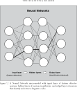
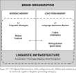

Week 3 Resources / Loose-Thread Tying
Hi all! As has become my tradition, I am writing this as a “wrap-up” of loose threads that I felt were left un-tied at the end of lecture on Wednesday. This week, right after class ended, I did a deeper dive into the Sapir-Whorf Hypothesis, to try to (a) clarify the discussion we had around Sapir-Whorf vs. Linguistic Relativism and Linguistic Determinism, and (b) tie it back into the main course topics! But first, the stuff-I-googled portion:
1. Things I Googled / Opened During Class
2. Linguistic Relativism, Linguistic Determinism, and the Sapir-Whorf Hypothesis
Honestly, this question simmered in my brain from the minute it came up until the end of class! So, from the time class ended up until now, I went back and re-read two of the four books that had put these concepts into my brain in the first place. The two I read were:
- Marcel Danesi (2021), Linguistic Relativity Today: Language, Mind, Society, and the Foundations of Linguistic Anthropology (Danesi 2021) [PDF; this one is particularly difficult and expensive to obtain a hard copy of!]
- John McWhorter (2014), The Language Hoax: Why the World Looks the Same in Any Language (McWhorter 2014): This one I did explicitly mention in class and put it on the slides [EPUB]
While the two I didn’t re-read, but did impact my brain at some earlier point, were:
- Steven Pinker (2005), The Stuff of Thought: Language as a Window into Human Nature (Pinker 2005) [EPUB]
- George Lakoff (1987), Women, Fire, and Dangerous Things: What Categories Reveal about the Mind (Lakoff 1987) [PDF]
Besides the time factor, the reason I only re-read the first two is because: (a) I remember feeling like the Pinker book was overly dismissive of the whole idea; as in, I don’t feel like it gave a very “fair trial” to the nuances of the degrees to which language and thought affect one another. And (b) Lakoff’s books are… I feel like I should like them, the specific topics he looks at are fascinating and relevant and important imo, but then when I actually open them up and read them I often feel like the writing is a bit dry and monotonous1.
And, my followup thought on this is: I was too dismissive of the Sapir-Whorf Hypothesis! One of the reasons I settled on the Danesi book at spot #1 is because, I think it does a really good job of separating the strong and weak forms of this hypothesis, and it matches 100% with how Cynthia summarized it in class! So, I hereby delegate Cynthia as the class consultant for language in data ethics and society 😎. The summary I can come up with, trying to synthesize what Cynthia said and how it’s described in the Danesi book, is that:
- Linguistic Determinism, or the Strong Sapir-Whorf Hypothesis, posits that “language determines how people think” (Danesi 2021, x), whereas
- Linguistic Relativism, or the Weak Sapir-Whorf Hypothesis, posits that language shapes (without determining) how people think.
Basically, the Danesi book’s preface mentions the strong version but quickly dismisses it: “From the relevant studies, there is little support for the so-called ‘strong’ version” (Danesi 2021, x). The first chapter then goes in-depth into the weak version, in a really fascinating way.
I was taking the term “Sapir-Whorf Hypothesis” in general and conflating it with the strong version, and that’s where my criticism was coming from. I should have phrased what I was saying as: the strong Sapir-Whorf Hypothesis can be problematic, from my perspective, given the implications that could come from believing it to be true when it isn’t.
In its strong form, for example, it strikes me as alarmingly reminiscent of Samuel Huntington’s Clash of Civilizations hypothesis (and the many similar and similarly-influential global-cultural claims), which have the effect of telling policymakers something like “we’ll never be able to bridge the humongous gap between ‘Eastern’ and ‘Western’ cultures, so they’ll just have to eternally clash with one another, and uh, I hope ‘we’ win!”
This is the kind of danger that, in my reading, McWhorter is warning about in the Language Hoax book whose cover was in my slides: just that, we have to be very careful when talking about concepts as fuzzy and hard-to-define as “a culture” or “a language” since, despite their vagueness in theory, they can become reified and morph into dehumanizing claims and then entire books about e.g. the “Arab mind”, and then these kinds of books can hypothetically become “the basis of” one’s “cultural instruction” in the US Army, with predictable consequences…
“At the institution where I teach military officers,”” as retired U.S. Army Col. Norvell De Atkine writes in the book’s foreword, “The Arab Mind forms the basis of my cultural instruction.” (from Slate, “Inside The Arab Mind: What’s wrong with the White House’s book on Arab nationalism”)
With that said, I don’t think there’s anything in Whorf’s original description of the idea that lends itself to this kind of cultural essentialism! I think the following quote from Whorf, quoted at the beginning of the Danesi book, makes the distinction really clear:
We are thus introduced to a new principle of relativity, which holds that all observers are not led by the same physical evidence to the same picture of the universe, unless their linguistic backgrounds are similar, or can in some way be calibrated. (Whorf 1956, 229)
Basically, this quote is how I’ll remember Sapir-Whorf as linguistic relativism, rather than determinism, from now on!
3. Mental Math Speed as an Example of Weak Sapir-Whorf
The example that came up during that same discussion—where Keqin helped a ton by pointing out the syllabic differences in mathematical symbols/terms between different languages!—I think was first implanted in my brain by a 2014 article from the Wall Street Journal, “The Best Language for Math: Confusing English Number Words Are Linked to Weaker Skills” (Shellenbarger 2014), that went 2014-style viral, or at least viral among… cross-cultural linguistics nerds?
I tried to find the presentation (or at least the paper) about the cross-cultural mental math experiments that I went to while I was at the Santa Fe Institute, but I wasn’t able to track it down. And, I found it surprisingly difficult to find actual scientific studies of it more generally2. However, I did find a super-interesting deep-dive into aspects of the original Wall Street Journal article, and an even more super-interesting book:
- Barbara M. Birch and Sean Fulop (2021), English L2 Reading: Getting to the Bottom (4th Edition) (Birch and Fulop 2021) [PDF]
which goes into an awesome amount of analytic detail about second-language learning. It even has a neural network diagram right in the first chapter, which is how I knew I had to read it 🤓:

For our purposes, though, the two most interesting parts of that book come at the end of Chatper 2 and then… the entirety of Chapter 3, which is on “Interlanguage Reading and Transfer”. As a segue into this chapter, which contains a bunch of material on studies of mental math, the end of Chapter 2 presents the following as its fourth “Discussion Question”, which I wanted to copy here as a “food for thought” exercise for you, having had our discussion around mental math and language!
This quote comes from Tzeng and Hung (1981): “Miller … has pointed out the importance of notational design in the history of mathematics. In Miller’s words (1957) ‘In order to study the interaction of thought and symbol it is not necessary to travel with Whorf to the Zuni Indians; the language of mathematics is rich with excellent examples. Why are Arabic numbers so superior to Roman?’” (p. 238).
In that spirit, compare these different representations of the same meaning concept (the number seven): 7, seven, vii. Which type of writing does each correspond to? (If 7 and vii are both logographic, what is the difference between them?) What are the advantages and disadvantages of each type of number? Do you agree that the history of mathematics has been affected by the type of notations developed? Could mathematics have advanced without the symbols like 7?
Could language and culture be similarly affected by the writing systems that evolved in different civilizations? Logan (1986) argues that alphabetic writing was related to the growth of theoretical science in Western civilization and not in Eastern: “The effects of the alphabet and the abstract, logical, systematic thought that it encouraged explain why science began in the West and not in the East, despite the much greater technological sophistication of the Chinese […] the inventors of metallurgy, irrigation systems, animal harnesses, paper, ink” (p. 23).
Then, the section of Chapter 3 with the title “Writing Systems and Transfer” contains the “meat” of the question, with references to individual studies you can read for a true deep-dive (including a study that very specifically looks at Hong Kong ESL learners! For those interested: (Yeung, Siegel, and Chan 2013)).
I’m copying that section of the chapter in full below, so that you have the previous “discussion question” and this section all in one place, and you don’t have to worry about going and obtaining the full book if you don’t want to! (This one is collasped by default, to make the page look less scarily-long)
Writing Systems and Transfer
One question that researchers have tried to answer is whether logograms like Chinese characters or Japanese kanji are read holistically or not. There was early evidence for this idea because reading logograms was more like processing pictures than reading (Henderson 1982, 196). Morton and Sasanuma (1984) concluded that for Japanese writing, although the kana were read analytically, the kanji were read holistically. To them, there seems to be “a strong dissociation between the processes involved in reading the two scripts [kana vs. kanji]” (p. 40). However, Leong and Tamaoka (1995) argued that both visual and phonological processing occur in accessing difficult kanji with phonetic elements.

Reading Logograms
Koda (1995) explained how both holistic and phonological processing are involved in reading logograms. Koda suggested that all writing systems require readers to access phonological information because working memory is better for phonological material than for visual material. However, the timing of the phonological access is different. Alphabetic writing requires access to a phonological representation prior to or at the time that the word is retrieved from memory. A logographic code requires phonological access only after the word is retrieved because that is the time when phonological information becomes available to the reader, as shown in Figure 3.1. It is, in fact, impossible to pronounce an unknown character because often the phonetic cues are not enough. Logograms may also be read without access to sound, as in mental math calculations, where thinking of the name of the number symbol slows down the process. This evidence supports the claim that readers use different linguistic strategies to handle logograms (holism) vs. alphabetic words (analysis) but that the universal phonological principle does hold.
Tan et al. (2003) studied intermediate Chinese/English graduate students who began learning English after the age of 12, comparing them with a group of English monolinguals. They found that phonological processing of Chinese characters activates portions of the brain that process spatial information. The activation of this system was related to the square configuration of the character, which then maps onto a monosyllabic unit of speech. When the Chinese students performed a phonological task on English words, they activated the very same visual processing system, unlike the brain areas activated by the English monolinguals when they performed phonemic analyses.
Tan et al. (2003) thought that their Chinese subjects were trying to use their L1 system to read in English. Since they lacked the infrastructure for English, they could not process the alphabetic writing system like the English readers did. In other words, the Chinese graduate students were not taking advantage of the alphabetic writing. However, little is known about their background as language learners. Yeung, Siegel, and Chan (2013, 699) found that if Chinese-speaking children gained in phonological awareness, their reading also improved. They suggested that “once children acquire phoneme awareness, even without explicit instruction in letter-sound correspondences, they change the reading strategy and readily apply the phoneme awareness to aid word recognition.”
Koda (1995) studied Japanese, Arabic, Spanish, and English readers of English and found that symbols that had no phonological cues and unpronounceable words interfered less with the Japanese readers than with the alphabetic readers. Unpronounceable words interfere with English reading because of the difficulty they pose for phonological analysis. English readers stumble over the unpronounceable foreign names in a novel like War and Peace. They try to process them holistically by remembering the appearance of the name and associating it with a certain character. Or they try a laborious analytical strategy of sounding out the names and remembering them by sound. Either way, they are obstacles for reading.
However, unpronounceable words did not cause difficulty for the Japanese readers that Koda (1995) studied because they treated the problem words as they did kanji. They did not try to pronounce them; they tried to remember them visually. Also, English reading comprehension among Japanese college students was unaffected by the unpronounceability of English words, suggesting a strategy of relying little on phonological information in reading the unknown words. The strategy these Japanese students were applying to unknown English words was holistic, visual, and meaning-based, discarding the very strengths of the alphabetic writing system with its cues to sound. The short-term strategy of treating unfamiliar words as logograms may assist English beginning readers at first, but over time, it is more efficient to decode unknown words and assign a pronunciation to them. In short, there is evidence for transfer of processing strategies from L1 to L2 if the writing systems have some similarity such as Chinese characters, Japanese kanji, and symbols or unpronounceable words. This is facilitation, but it may only offer a short-term benefit
References
Footnotes
I’m mostly thinking of his book with Mark Johnson here which I read more recently, Metaphors We Live By (Lakoff and Johnson 1980), so maybe the newer one is more interesting and I’m being unfair here, but yeah limited resources, I wanted to be able to read at least one full book between end-of-class and this writeup!↩︎
If you try searching for it by googling something like
"mental math" "speed" "mandarin" "english"however, you will find lots of fun videos and books about 史丰收 / Shi Fengshou, who created a very fun-to-watch mental math technique involving rapid hand gestures!↩︎